1. Information will be used as part of the Edinburgh Living Lab project. The project is a partnership between the University of Edinburgh and City of Edinburgh Coucil.
2. Information will be shared with City of Edinbutgh Council in connection with improving transportation around the city, in particular promoting walking and cycling.
